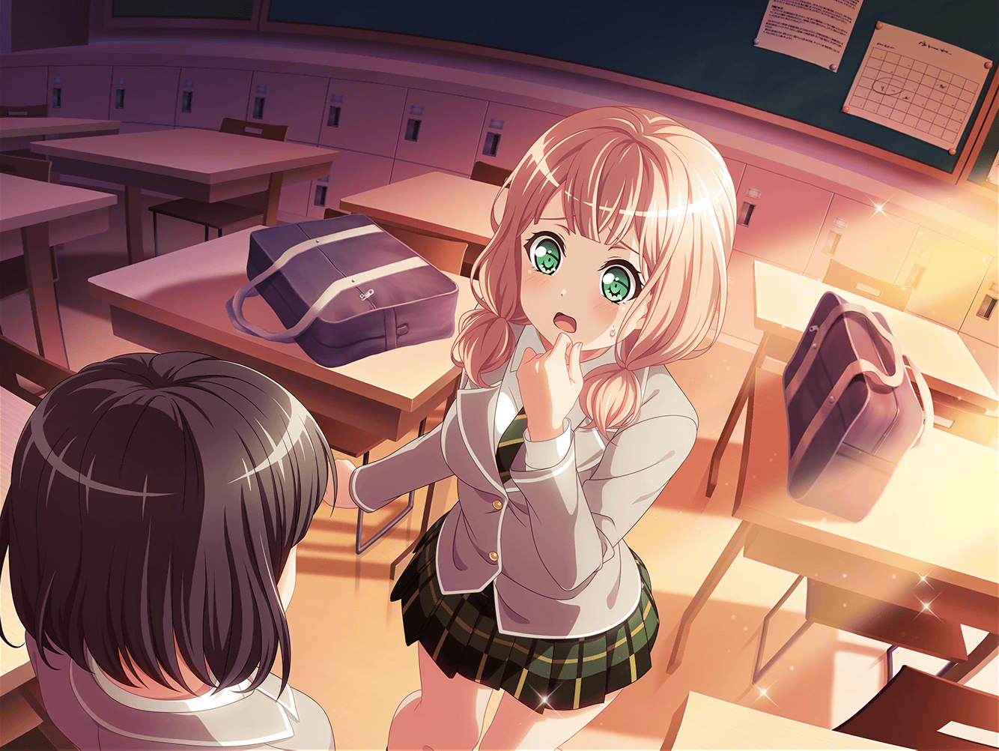

羽沢珈琲店
ひまり
えー、この日もダメなの！？
それじゃあー……来週の土曜日とかは？
モカ
そこならあたしはおっけ～
つぐみ
私も……うん！
この日ならイヴちゃんが１時から来てくれるから大丈夫だよ！
ひまり
りょーかい！
それじゃあ１回ここに予定入れちゃうね。
また予定変わったらみんな教えてね！
つぐみ
うんっ！
ひまりちゃん、いつもありがとうね！
つぐみ
ひまりちゃんがこうやって予定入れてくれるから、
すっごく助かってるよ！
ひまり
えへへ～。
それならよかった～！
モカ
確かに助かるけどさ～、ひーちゃんって、
予定以外のこともたくさん更新するよね～
ひまり
えっ、そうかな？
モカ
この『つぐ、間違えてブラックコーヒーを頼む』とか。
ほとんどひーちゃんの日記じゃん
ひまり
た、たまにはいいかなって！
モカ
たまにはって言うけど、昨日の夜だって
『蘭がワレモコウって花のことを教えてくれた！
なんか嬉しい！』って更新してたよね～？
ひまり
うっ……
モカ
通知が結構くるんだよね～。
モカちゃん、困っちゃうなあ
ひまり
も、もしかしてつぐも困ってたり……？
つぐみ
あはは……
確かにたくさん通知がきて、他の通知見落としちゃったり……
た、たまにだけど！
ひまり
うぅ、ごめん……
モカ
スケジュールと日記は違うんだからね〜？
ひまり
で、でもモカもたまに
予定じゃないこと書いてる時あるよね？
モカ
えー、あたしは自分の予定しか書いてないよー
それも大事な予定だけだし
ひまり
じゃあ、ここに書いてある
『やまぶきベーカリー、ポイント３倍デー』ってのはなんなの！
大事でもモカの予定でもないじゃん！
モカ
いやいや、これはめちゃくちゃ大事な予定だよ。
わかってないな〜
ひまり
もぉ～！ 意味わかんないし！
……はあ、けど、まあモカは予定書いてくれるだけマシか～。
巴は私が言わないと全然書いてくれないしなー
モカ
蘭なんて更新したことすらないもんね～
ひまり
ホントだよ～！
モカ、ちゃんと蘭に使い方教えてくれた？
モカ
あったりまえじゃん～。
それはもうバッチリだよ～
ひまり
な、なんかすっごく不安……
けど、こうやって考えてみると、
ちゃんとした使い方してるの、つぐだけかもね
つぐみ
え、そうかな？
普通だと思うけど……
ひまり
『４時から生徒会室で会議！』とか、
『お店、１時からイヴちゃんと交代！』とか、
なんかすっごく予定、って感じ！
モカ
ひーちゃんも、見習ってほしいですなー
ひまり
わ、私のことはいいの！
つぐみ
あはは……
けど私、ひまりちゃんの投稿見るの楽しくて好きだな
ひまり
ホントっ！？
どういうところがっ！？
つぐみ
えーっと……あった！
例えばこれとか！
モカ
『今日の演奏、今までで１番良かったかも！？』
あー、蘭も珍しくちょっとテンション高かった日だよね
つぐみ
そうそうっ！
なんかこういうの見ると、その時嬉しかった気持ちとかが、
もう１回思い出せるような気がしない？
ひまり
つぐ〜！ そうなんだよ〜！
こういうのって、絶対大切だって！ ちょっとしたことでも
私達の『いつも通り』なんだから
モカ
なるほどね〜。ひーちゃん、さすがリーダーだね。
そこまで考えて書いてくれてたなんて
ひまり
えへへ……あんまり考えてたわけじゃないけど……
モカ
ひーちゃん、今のことも書いといたら？
日記は大切だよ〜的な
ひまり
りょーかいっ！
それじゃあ……
つぐみ
『モカが私の投稿認めてくれた記念日！！！』だって……ふふっ
モカ
え〜、なんかそうじゃないって〜。
こう書かれると、照れちゃうな〜
ひまり
えー、いいじゃん！
これだって、私達の大事な思い出の一部なんだからっ！